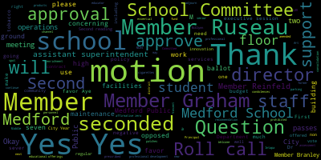
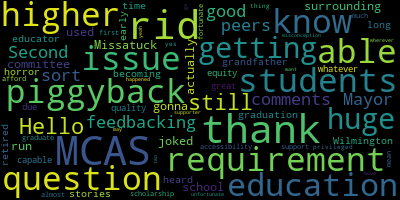

[SPEAKER_08]: Thank you.
[Lungo-Koehn]: Thank you. Okay, we have the fourth regular meeting of the Medford School Committee, September 23rd, 2024. First up is executive session at 5 p.m., regular meeting at 6.30 p.m. This meeting is being recorded and it's being held in the Howard Alden Memorial Chambers, Medford City Hall via remote participation and in-person. Meeting can be viewed live on the Medford Public Schools YouTube channel through Memphis Community Media, on your local cable channels, Comcast 9, 8, or 22, and Verizon channel 43, 45, or 47. Participants can log in or call by using the following Zoom link with meeting ID 965-5999-6881. Member Rousseau, if you could call the roll. I don't believe any student reps are on just yet. It's 5 o'clock. If we all may rise to salute the flag.
[All]: I pledge allegiance to the flag of the United States of America and to the republic for which it stands, one nation, under God, indivisible, with liberty and justice for all.
[Lungo-Koehn]: And we have executive session pursuant to chapter 30A, section 21.2, to conduct strategy and preparation with non-union personnel or contract negotiations with non-union personnel, specifically assistant superintendent of curriculum and instruction, assistant superintendent of enrichment, innovation, and operations, director of student services, director of human resources, elementary, middle, and high school principals, executive assistant. McGlynn Middle School Principal Stipend, Director of Arts Stipend and Data Manager. Refer to Appendix A and Appendix B for the full list. Motion to enter Executive Session by Member Reinfeldt, seconded by Member Graham. All those in favor? All those opposed? roll call please yes yes yes yes yes yes seven the affirmative zero the negative we are going to go into um executive sessions oh thank you yeah mine didn't print right
[All]: We're recording. Okay, now let's switch in Kim.
[Lungo-Koehn]: just just that just that one.
[All]: You know, you know, I don't have it.
[Intoppa]: Thank you.
[SPEAKER_21]: so uh testing one two can you hear me i just okay uh it's gonna take a couple of secs for uh people watching from home so i just want to double check
[Intoppa]: Hello?
[Branley]: Hello? Testing.
[Intoppa]: Is this still feedbacking? No, we're good.
[Lungo-Koehn]: OK, we'll continue. We're up and running. I'll turn it back over to the superintendent of schools, Dr. Edward Vincent.
[Edouard-Vincent]: Thank you. Good evening, everyone. Welcome to our second school committee meeting of the academic year. We have seen so much social and emotional learning from our students inside and outside of the classroom compared to when we last met. I'm very excited to share the latest news involving our Medford school community. Last week wrapped up our school curriculum nights, which were held over a two week period. The turnout from the community was simply fantastic. I spoke with principals and teachers from different grade levels who raved about the attendance and engagement from parents. Dr. Galussi and I were at the high school's curriculum night last Thursday, and the hallways felt just as busy as passing time does during a normal day at the high school. Even if you were not able to attend your child's curriculum night, I want to thank all parents and caregivers for being so dedicated to your child's learning journey. Please continue to engage with your child, teachers, and administrators to best support that path. Last week also was our Medford Comprehensive High School Building Committee meeting that we met for the first time this school year. We submitted all required paperwork for the first phase of the MSBA process earlier this summer, and Wednesday's meeting served as a great check-in as we await to hear from the MSBA on potential next steps. Thank you to our MCHSC committee chair, Member Graham, and all of our other committee members for their unwavering commitment to creating a new high school for our students. I also wanna provide an update to the community regarding bus transportation. last meeting we spoke about the need to improve our bus transportation for our medford students and families myself and the rest of the administrative staff continue to work to find solutions to our challenges chief among them overcrowding and the lack of busing for uh two specific after-school programs we spoke with eastern bus company owner chuck winnitzer again this week last week on friday this time in person and he he reassured his commitment to medford public schools he did let us know that if there is an available driver on a given day by 2 pm that that driver will be dedicated to medford to assist in the after-school bus programming Shortfalls in bus transportation are not a challenge unique to Medford. However, we continue to create solutions that best meet the needs of our community. For example, at the Brooks Elementary School, students in Sigma after school program have individuals that are volunteering their time to monitor our students while they wait for the bus to bring them to their respective programs. While this is understandably a short-term solution, we want to thank all of those involved, including RSK for sending Mr. Jesse. We thank everyone for their patience and their flexibility while we work through our transportation challenges. I'd like to reiterate that Medford is currently not being charged by Eastern Bus for the buses we are not using. So it is in the best interest for Eastern Bus to help solve this problem. Throughout the last few weeks, we have also explored alternative transportation options, including vans, coach buses, and other school bus companies to solve this ongoing challenge. I also just want us to pivot quickly because now we are talking about the beginning of fall. I want to provide an update from our school health department. which is working with the community in trying to keep all of us healthy during this upcoming flu season. So MPS Health Services is collaborating with Smiles by Rosie to provide in-school flu vaccination clinics for students. Consent forms will be sent home with elementary students and parents of secondary students can expect further communication in the very near future. The School Health Department and the City of Medford Board of Health are also hosting a health services fair this Saturday from 10 to 1 at the Andrews Middle School. Stop by to learn important topics such as behavioral and mental health, health insurance, fitness tips, nutrition, and more. Attendees can also register for a free flu vaccine clinic that will be taking place. I also wanna share some news from our vocational school. Our vocational school is ramping up their service to the community as we have settled into the year. Earlier this month, the Mustang Mall opened for business. Operated by our business technology and marketing vocational students. who run the Mustang Mall. This gives members of the community an opportunity to come up, come into the store and stock up on your Mustang apparel. Or you can also shop online. We also want to share that our wonderful Bistro 489 opened their doors today to the community and our wonderful culinary arts students will be serving delicious breakfast and lunch food options. So please come by and support our students in Bistro 489. I'd like to transition quickly to the greater Medford community. This weekend will be one to remember with so many terrific events happening for those of all ages. Run Medford Run will be held on Friday and Saturday. That's September 27th and 28th at Hormel Stadium with the kids run and the high school mile being held on Friday. 50% of the proceeds from these two events will be donated to our schools. There are also additional races throughout Friday night and Saturday morning. Interested participants can register for all Run Medford Run events online. Thank you to Mayor Longo Kern, Dave McGillivray, the Medford PD, and all those who are involved in planning and the execution of this fantastic event. after finishing up run medford run on saturday head on over again to the andrews middle school for the previously mentioned health services fair again that's from 10 to 1 o'clock sunday will be another wonderful day full of celebration in medford at tufts community day join your neighbors family and friends on sunday september 29th from 11 to 2 p.m at the Tufts University Academic Quad. Enjoy fun activities, live performances, free raffles, food and drinks while supplies last. This is a reminder that next Thursday, October 3rd, there will be no school. It is in celebration of Rosh Hashanah. Rosh Hashanah is also known as the Jewish New Year. It invites us to look back on the past year, celebrate our achievements, and consider the opportunities for growth in the year ahead. To our Jewish friends and all who are celebrating, I wish you a happy new year filled with health, joy, and peace. May this holiday inspire us all to embrace supporting each other in our journeys. Lastly, Medford Public Schools in the city of Medford will be hosting a ribbon-cutting ceremony at the McGlynn Elementary School on Tuesday, October 8th, beginning at 3.30. Please mark your calendars. It's a time to celebrate the opening of our new universally accessible playground. Members of the public are invited to celebrate and, most importantly, play on the new playground following the ceremony. I do want to thank the playground committee, Dr. Peter Cushing, Mayor Longo-Kerm, the Medford School Committee, our consultation and design partners, and all those who helped create this outdoor universally acceptable space, accessible space for all. If you need a reasonable accommodation to attend or participate in this event, please contact the City of Medford's ADA coordinator, Francis Nwaje. A formal press release will be sent to the community later this week. So tonight, I am excited to welcome members of our City Year team. and Principal of the McGlynn Middle School, Mr. Nick Tucci, to hear about their experiences so far in Medford Public Schools. We'll also be hearing about a few grants that we are requesting approval from the committee, and those will be presented by our Director of Arts, Ms. Suzanne Fee, our Director of Student Services, Ms. Joan Bowen, and Dr. Cushing will be presenting on operations. Thank you.
[Lungo-Koehn]: Thank you, Dr. Edward Vincent. Next, we have a recommendation to approve budget transfer for city year work. Mr. Gerald McHugh, come on up. Mr. McHugh is a former finance director and now a budget specialist, right?
[McHugh]: Before we have a transfer of this budget, at a previous school committee at the end of the summer, you briefed on this opportunity that came late in the year or just ahead of school opening. So it wasn't part of the budget that was passed in June. We do have a... $500,000 contingency line that's titled undistributed salaries in the budget. And that's been a feature of the budget, at least in FY24. The cost to run this program in both schools is $200,000. Part of the services we'll receive is to support the afterschool program. So I allocated the expense 65% in the school budget and 35% in the before and afterschool revolving fund. So in order to make sure we also comply with reporting requirements, it's important to have these expenses reflected in the schools that are receiving the services. That's how the state wants us to report school-based spending by school. So we've set up three new accounts in the admin system. uh one for the missatuck and then uh we're splitting the expense um at the mcglynn between the the middle and the elementary uh so once those uh currently the con in order to um proceed with getting the contract finalized we issued a purchase order, which is 100% charged to the before and after school program until we could get these accounts set up and funded. And once that happens, with your approval, then we can adjust the purchase order to reflect these expenses.
[Lungo-Koehn]: Thank you, Member Graham. And then member Russo. I was just going to make a motion to approve. Approval by member Graham, member Russo.
[Ruseau]: I want to thank you for bringing forward budget transfers to us. I appreciate it. And I wish we could figure out where the extra echo is coming from, but thank you. And I'll second that.
[Lungo-Koehn]: Motion for approval by member Graham, seconded by member Russo. All those in favor? Aye. Roll call.
[Ruseau]: Member Brantley?
[Branley]: Yes.
[Ruseau]: Member Graham?
[Branley]: Yes.
[SPEAKER_16]: Member Antoppa? Yes. Member Olapade? Yes. Member Reinfeldt?
[Lungo-Koehn]: Yes.
[SPEAKER_16]: Member Soyes? Mayor Longocher?
[Lungo-Koehn]: Yes. Seven the affirmative, zero the negative. Paper passes. We have recommendation to approve $10,000 donation from the Cummings Foundation Make a Difference Dollars Program. Welcome Ms. Suzanne Fee, our Director of Arts.
[Fee]: Good evening, everybody. I'm here to give an update and share some plans for this $10,000 donation that we got, as you stated, from the Cummings Foundation. We used these funds in the spring to create mini grants, and the donation was intended to be arts-based enrichment that works to promote positivity and social change within our community. So all the mini grants reflected that theme. At the high school level, we had the ceramics club working on quote tiles that are hung in the halls of MHS. At the middle school level, at one of our art events, we had suminagashi art, a post for students and families to interact with. This one I'm really excited about. Outside the EL office at Medford High, we created a look and find board that was designed by students in my design class. And it's a large board that just has, sorry, a bunch of imagery and then little papers that say, can you find sort of like a where's Waldo, but it's a great interactive way for our non-English speaking newest students and little brothers and sisters when they're in the waiting room to feel welcome and make that visit a little bit more. pleasant and a little less nerve-wracking. So that artwork's getting framed now, so we're really excited about that. And then our other big project was the Kindness Campaign, where we had students design posters and stickers, and we had them printed, and you can see them hung up here at City Hall, at Colleen's, at Medford Public Library. They're at every elementary school and middle school. So those are some of the events, the projects that we did. Sorry, one more. At the Andrews, we did a specific art display celebrating women artists of color. And so those are some of the mini grants that we operated last spring. Starting in October, we're opening that up again to hopefully have new and different art-based grants across the district. And I hope to be back in the spring to share those updates with you. The other big project that we did with some of these funds were our first ever summer arts workshops that were offered at all three levels, K through 12, where students worked on art that was based on social issues that were important to them. And then the littlest kids in our K through three program worked for the week exploring of how to sort of share the theme of kindness through their art. We had a waiting list this year at both the elementary and the middle school level. And so this is another initiative we hope to expand next summer with maybe getting more teachers so that we could offer maybe two classes at each elementary and middle school level. So that's an update on what we've done and where we hope to be. And we're really excited about this grant. Any questions?
[Lungo-Koehn]: Thank you, Ms. V. No questions. Thank you so much for the presentation. Thank you. Appreciate it.
[Ruseau]: Did we already motion to approve the Cummings grant or did we already approve that?
[Lungo-Koehn]: Oh, so we recommend you to motion to approve. Is there a motion to approve on the floor?
[SPEAKER_08]: Motion.
[Lungo-Koehn]: By Member Rousseau, seconded by? Second. Member Intaba. All those in favor? Aye. We will accept $10,000. Roll call, actually. Thank you. Roll call. Roll call.
[SPEAKER_16]: Yes.
[Lungo-Koehn]: Yes. Yes. Yes. Yes. Yes. Yes. Yes. Yes. Yes. Yes.
[All]: Yes. Yes. Yes.
[Lungo-Koehn]: Yes. Yes.
[All]: Yes.
[SPEAKER_16]: Yes. Yes. Yes.
[Lungo-Koehn]: Yes.
[Bowen]: Good evening. One of our generous parents in our project transition program has donated anonymously $1,000 to be used towards students programming, vocational opportunities, community trips, things of that nature. So we are respectfully recommending that the school committee approve this generous and thoughtful donation for the students of project transition. And for people who aren't aware, This is our program for our students 18 to 22. It's providing them with opportunities to volunteer, get jobs, real life situations. And then when they age out at 22, we're hoping that they're able to give back to the community. Some of our students in Project Transition also work at... chapters coffee cart in the library so it's a great way to get them into the community and with this donation um the district would be able to offer them a few more opportunities like that thank you very much miss bowen and we're sad to hear that chapters is closing at the library i know i know it's very sad at the end of the month motion to approve second motion approved by member so seconded by member reinfeld roll call please remember branley
[Lungo-Koehn]: Yes.
[SPEAKER_16]: Member Graham.
[Lungo-Koehn]: Yes.
[SPEAKER_16]: Member Intapa. Yes. Member Lopate. Yes. Member Reinfeldt.
[Lungo-Koehn]: Yes.
[Ruseau]: Member Soyes. Mayor Longo-Kern.
[Lungo-Koehn]: Yes. Always. Thank you. Thank you very much. Please thank the anonymous donor for us. City Year Partnership Update. Ms. Monica Roberts, Executive Director of City Year. Ms. Erica Alvarez-Werner, City Year Chief of Staff. And Mr. Nick Tucci, Principal of the McGlynn Middle School. Welcome. I'll turn it to you.
[Roberts]: Thank you. Good evening, everyone. Good to see you all again. I am again, Monica Roberts, the Executive Director of City Year Greater Boston. I am joined by my team. Oh, the light is on. Yeah. Yeah. Is that better? Okay, sorry, I'll start again. Good evening, everyone. I am Monica Roberts, the Executive Director of City of York, Greater Boston. It's good to see you all again. I am joined by my team. I thought it might be helpful to see the faces on the ground who are working in our schools. So I'm just going to ask them to stand. Miss Kayla David, sorry, Kayla Tebow, who is our Impact Director, supporting the manager on the ground, as well as some other schools. And then we also have Alyssa David. who is working directly in the school supporting our AmeriCorps team. So hopefully you'll see their faces. And we're really happy to be joined by Principal Nick Tucci to talk a little bit about what's happening on the ground. So I just want to tee up the conversation today. I also happen to be my chief of staff, Erica Alvarez Werner. She will share an update and we'll leave time at the end for questions should you have any.
[Werner]: Is this working? Can you hear me? Great. Thank you so much for the opportunity to present an update on our exciting new partnership with Metroburg Public Schools. Excellent. How do I?
[Roberts]: Oh, you're going to do it.
[Werner]: Great. Thank you. I know you're familiar with City Year, but just as a quick refresher, City Year partners with schools to ensure student success. We recruit diverse young AmeriCorps members ages 18 to 25 to serve full time as tutors and mentors and to provide whole school support. So our core members are all day from the beginning of the day to the end of the day, serving about a 10 hour day. And some of the ways we support schools is through academic tutoring, social emotional support for students, attendance support. attendance support for schools, after-school support, which we'll talk a little bit more about, and certainly that full-time support, adding capacity to classrooms where we partner with teachers. So we'll talk a little bit more about where our Corps members are partnered. You can go to the next slide. Again, our AmeriCorps members are diverse, passionate, skilled 18 to 24-year-olds. They're committed to serving for full-time all year to get to their 1,700 hours of service. As I mentioned, it is full-time day in schools every day here that here's the fun part so here's Medford City your teams you can see the team at the McGlynn the team at the Mesa Tech pictured here they look happy and excited this is right about when they're about to start serving in your in your schools On the next slide, you'll see how we placed our core members. So at the McGlynn, there's a team of six that includes a team leader, which basically means it's a returning AmeriCorps member that brings that added experience and leadership in addition to the leadership that Kayla, I mean, Alyssa provides as the impact manager. And at the McGlynn, they're serving in one core member per grade, three through eight. And at the Missatuck, the team of five, including a team leader, is supporting three through five. Each is assigned to a partner teacher. Before our AmeriCorps members stepped foot in the school district, they started with us in August. So they participated in a very intensive four-week summer training. You can see here some of the topics covered. So really strong emphasis on building relationships with students and teachers, instructional strategies, understanding student development to provide that mentorship support, and then also some of the, obviously, the technical things they need to know around like mandated reporting and CPR certification. And then throughout the year, for two Fridays every month, our core members are also getting a lot of professional development to make sure that they're adequately prepared to support students. Here you can see a snapshot of the teacher and school onboarding process that we participated in. four-step process, starting with our leadership and school leadership to talk about school goals, what we know are our conditions to ensure success and impact for students, presenting to all staff at PD in August 26 to align with them as well. And then core members, once they were finished with their training, they came to schools and to acclimate themselves first participated in shadowing rotations to fill out classrooms and for teachers to fill out the core members before collecting their feedback and then determining with the principals how exactly they were going to be placed based on that two-week trial period. Core members have been placed for maybe one or two weeks at this point and are just now in the stages of getting to know their classroom teachers, doing those one-on-one conversations to set some goals and establish the expectations for the core member role in the classroom. In terms of after-school support, you can see here that our AmeriCorps members Both campuses are supporting after-school programming every week, so our core members are serving. If our core members are part of the elementary school community during the day, they stay for after-school programming. Same for middle school. So whether it's the enrichment clubs in the afterschool for the middle school or the regularly scheduled afterschool programming in elementary school, they're staying to provide that extra capacity and extra support to the existing programming. At the Missatuck, they will also be adding a homework club in October serving, I understand to be approximately 15 students who have been identified as really benefiting as students who could benefit from that support. Again, in addition to supporting at bringing additional capacity to enhance the programming. I know there's also the opportunity to work with school leaders on how this can evolve for perhaps the second half of the year and add additional capacity beyond what we're doing now. The priority now is to integrate into the existing programming and enhance the quality and then hopefully expanding more in the second half of the year. to address additional afterschool needs. Here you can just see our, you know, this is meant to exemplify our commitment to ongoing quality and model of fidelity and making sure that we stay on the same page to ensure student impact. So regular times, you know, obviously regular times for school administration and city year leadership to meet our core members are regularly meeting with their teachers, they'll be starting that. Now that they have those placements to plan, For students in October, you can see that our core members will begin what we call focusless support, which is where they really begin that more targeted support with students who have been identified based on what the data tells us in terms of their English language arts and math. No, you're good. And getting that two or three times a week, really targeted support in English language arts, math, attendance, and the social emotional mentorship. Here, this was just to add some fun to some of the fun things that we've done beyond what we've already presented. You may have heard that in September, City Year was featured as a partner for the New England Revolution. And we had the opportunity to bring students. And we're really thrilled with the level of enthusiasm and engagement of the families and students who came and walked out on the field with the players and stayed for the game. So that was a really fun night. And then some other on the next slide, you can just highlights a couple of the other whole school supports that we've been able to provide with curriculum nights, ice cream social, just bringing again that additional capacity to create a welcoming and vibrant culture for the school. Well, I'm excited to pass it over to our Principal Tucci before taking any questions that you might have.
[Tucci]: Okay, good evening and welcome. Happy new school year. I'm happy to kind of provide a little bit of information about how I've been really excited and enthused to work with City Year. From my perspective, at the start of every single school day, you might see me at the front door greeting all students on a typical basis, interacting with students, asking about how their night went, how their sports game went, giving them a high five. And I also try to strive to make sure that all my teachers are having positive interactions with all of our students before the time they walk in the building and by the time they get to homeroom. That's my goal. And I always tell teachers I want to see a regular student have at least two positive interactions with their teachers before they even step foot in homeroom. Well, I can say that City Year really helps us kind of accomplish that. You know, that's just an example of the life, the energy, the awesome excitement and engagement that they've been able to provide to our school community because I really see it right from the get-go. i think that's really important to help our students feel like they belong and i see city year as being an important partner and helping us kind of achieve one of our core values here in the metro public schools Thus far this year, it's been great to see City Year be in our classes, being tutors, pushing into classrooms and helping provide that targeted support. I know that we've surveyed our faculty members and been able to solicit their feedback of where the highest priority areas they could use a City Year core member in their class. So I've sat down just in the past few days with Alyssa David and we hard scheduled out every single city or core member so that we're using them very effectively in very targeted type of ways to be able to maximize the level of support that we can provide. So this will be an ongoing conversation that will be data informed and we really hope that we'll continue this awesome work and partnership. I'm also excited with the role of our clubs and activities at the middle school level just this week to be able to have our city or core members be a part of the life awesome energy and engagement of our clubs and activities at the middle school level. And hopefully they can help us take it a step further with this wonderful partnership. So I'll just also mention they're part of our team at the McGlynn Middle School, just like they would be at other schools. They're part of our staff professional development, our faculty meetings, and true partners and what we can offer our students. So I just want to say that it's been a great few weeks in working with core members. They've made a great first impression with our students and myself as the principal. And I look forward to expanding this partnership. I'm happy to take any questions you might have.
[Edouard-Vincent]: I want to thank City Year and all of the members that aren't here today for what you're doing thus far. But Principal Tucci, I wanted to just ask you to piggyback specifically on one of our conversations about future educators and how you are mentoring and how you see that work potentially.
[Tucci]: absolutely so i know a lot of our core members some of them are really interested in potentially jumping into the field of education and this is uh important for the medford public schools to be on the the cutting edge to be able to capture the best and brightest educators that have a lot of energy and excitement and if we're able to work with our city or core member partners to be able to develop them and nurture them and hopefully put them under our wing to be able to help to turn them into maybe future educators and become mustangs themselves so i think that i'm excited i've already had a few different conversations with core members in just a few weeks about that very topic and how we can continue to support them in their growth as professionals and hopefully bring them on in and bring them into the mexico schools thank you so much for the update and welcome to our classrooms thank you for joining us a member or so oh somebody's online
[Lungo-Koehn]: Jess, name and address of the record, please.
[Healy]: Jessica Healy, Full Lock Road. I just want to know, are we going to be notified, like if our child's working with someone from city who went on one, will we be notified of that?
[Roberts]: Yeah, we will, thank you for that question. We will work with school leaders so that families are aware. Our AmeriCorps members are typically working in the classroom alongside the teacher. So they'll be working sometimes whole class, sometimes small groups, sometimes individual. So I think likely families of those students who are being served by an AmeriCorps member will likely receive notice, but we'll work with the school leaders on that.
[Healy]: Thank you. Thank you.
[Lungo-Koehn]: Great, thank you so much for presenting. We appreciate it. Best of luck to the year. We have a recommendation to approve new senior parking fee of $150. Dr. Peter J. Cushing, Assistant Superintendent.
[Cushing]: Good evening, Madam Mayor, members of the school committee. Thank you for formally hearing this proposal and went back with school leadership. There are some students in the audience present in the class who may also want to speak on it as well. It is, I will say it is mislisted as a senior only parking fee. This would be a parking fee at $75 to park that would benefit. It would go straight to student hardships. Student events and the $75 for seniors in addition would be to paint and decorate their personal parking space as many high schools do. If they so chose just to drive the car and not park, it would be the $75. if they so chose to paint and decorate their parking space, which really adds a lot of color and a lot of fun to school parking lots that I've seen it in, it would be $150. So that would also go directly toward the senior class. That part of this would go directly towards the senior class. as a fundraiser to help offset things like their prom costs, to offer students, again, seniors hardship waivers and things along those lines. I do have members of the senior class too to speak on it if the committee would so like to entertain any questions, but happy to answer any as well.
[Lungo-Koehn]: so dr just so thank you so much for listening to the school committee um two weeks ago and taking some of our ideas um back and and working this out so just so we have it straight 75 for any parking spot but any senior could also pay an additional 75 to paint their spot so we'll have ground art yes yes okay students would you like to come up
[Cushing]: Actually, just real quick, just so everyone knows, in looking at parking fees for area schools, they range between $40 and $150, just so that everyone is aware.
[Ruseau]: Dr. Cushing, before you step away, though, are there schools where there's no charge?
[Cushing]: In all honesty, not that I saw, but I do also know that there are some schools that don't allow parking, such as Somerville High School. Thank you.
[Lungo-Koehn]: I'm going to name and address for the record, and welcome.
[Casey]: JAMES CASEY, 835 Pelzoy West.
[Russo]: GIARUSO, 132 Grand Ave.
[Casey]: So I'm senior class president.
[Russo]: And I'm senior class vice president.
[Casey]: And so just to restate what was just said, the original $75 is just to park in general for any grade level, anyone who parks at the school. And that will go towards hardships and like bus passes, events, field trips, as well as student activities like the pep rally and other community events. And then where I come in for the seniors, the additional 75 is to paint your spot for the year. And that'll be your spot. And those funds will be used for class activities, such as prom. We hope to get senior t-shirts. And this will just be like a fundraiser for our class.
[Russo]: It's just a fun activity. I know a lot of other seniors have requested it. So by popular demand, we want to just see if we can get this approved.
[Casey]: Yeah, we started. had our first meeting about it in the spring like to try and we had a meeting with principal gabral and miss fritas haley they were really on board with it and as i said other public schools charge for it we found as low as 40 some schools up to 300 to park for the year so we found kind of a good medium at 75 and i think the most common concern was like we understand that paying for parking may come as a hardship to some students and the school's willing and prepared to support students and ensure that every student who drives is able to acquire their own spot and be able to assist students that need it.
[Lungo-Koehn]: Thank you. Sounds great. Thank you. I think you could even maybe have some donations from community members that want to paint too. Member Olapade?
[Olapade]: uh so thank you mayor and thank you for doing this i have two questions you mentioned briefly that for other grade levels i'm assuming this is just for seniors not for juniors and below okay but juniors and below can have a spot and do we have what we need spots wise or is this a lottery system to determine who gets a spot i've been told that we have the amount of spots okay
[Cushing]: so as with most schools as the year goes on um spots become significantly more of a premium so i think we're going to have to do as we look at the first year is first make sure seniors have spaces juniors sophomores and then perhaps a lottery there are there are there is a I think that as long as some students would be willing to park in the skate park area, we have enough spaces. However, that might be a further walk for some students who drive to school to get into the building. But the reality is we do have enough spaces. It's just those prime spaces in the front of the building and on the side of the building tend to fill up as more students get their permits and then their licenses.
[Olapade]: And then my second question is, is that when it comes to cleanup costs at the end of the year, what does that look like?
[Cushing]: So the spots are simply painted over for the next year by the next group of students that would come in. And if a space is not painted, then that senior from the class of 2025 will have a legacy until it is painted over. all right it's in in all in all fairness in all honesty it's definitely something that i think that we should entertain but as we bring on a brand new high school brand new parking lots um we should see how it goes see what maybe rules regulations need to be put in effect but you know i don't want to to quell anyone's artistic parking space integrity. But I think when you're looking at what the work of the high school is going to be, we wanna make sure that it's well presented.
[Casey]: Thank you. Yes. Us, every student who parts of the school like having assigned spot will also allow staff to like actually see it and know everyone who's parking at the school. Like there was an incident last week, a freshman drove BMW to school unlicensed. but no one would know because they don't know whose it is. Well, now everyone knows, but it's like just another thing they can see if someone's leaving. They can see exactly who is parking where.
[Lungo-Koehn]: Thank you. Member Weinfeld?
[Reinfeld]: I sort of hate to ask this, and this is not to curtail artistic integrity. Either do we have community standards for what gets painted, or is there a protocol in place if somehow something that shouldn't be in the lot shows up in the lot. I trust our students. I think they're great, but I just want to have that backup.
[Cushing]: I'll work with Principal Cabral and Associate Principal Freitas-Haley to make sure that whatever students are painting at least gets submitted for approval prior to conceptual drawing, something along those lines. Sound fair? Yes.
[Reinfeld]: Yeah, I'm not a fan of censorship. I just wanted, things can happen.
[Lungo-Koehn]: Yep. Member Russo, then Member Brantley.
[Ruseau]: Um, I would recommend that whatever community standards are developed that first of all, they're written down and then they're passed by our attorney because, um, students do have a first amendment rights, although it's slightly different. Um, and it can't just be a matter of. You don't like it. The principal doesn't like it because that does a pass muster with we are the government. the teachers of the government, we are all the government. And so that is, most people are confused on what the first amendment means, but the government interfering with what can and can't be said well. having varied rules about what can be said based on what the content is is not allowed. So, you know, somebody wants to do a rainbow flag here, that's probably fine, but then you go to certain places in this country and the same rainbow flag might get you, you know, expelled. So it's an example of the need to be very careful here. some things are offensive to some people and they're not to others. And it is not going to be up to the school to decide what's offensive and what's not. So I think that's a danger here I think that is deeply concerning for me. and uh i don't know that we have thought that part out it can't just be that the principal doesn't like it or you take a vote of administrators that those those are not options so having clear explicit guidelines ahead of time not afterwards ahead of time where you can say here are the guidelines And from the guidelines, any rational person could say that's in or out of bounds. That's how you avoid a First Amendment case here. So I'm going to guess that other schools that have the painting thing have already been through this, probably didn't get it done beforehand and then had to deal with the consequences. But we really should find out what other districts are using for guidelines, the exact language and see if... we like any of that, because that does worry. It'll just eat up huge amounts of resources and time and lawsuits, God forbid, but lawsuits cost a lot of money. So I'm very worried about that. I'm also... I'm concerned about, I'm not concerned about the $75 to paint. I'm concerned about the $75 to park. And I know that it was mentioned that we would set some money aside to help kids that couldn't afford it. But as some of you have heard many times, Okay, not all, there's a lot of new members here. So most of you haven't heard a lot of the things I've had to say. But by the time you're in high school, if you don't have the resources, you're not asking for help. That's not how it works. When you spent your childhood being aware that you don't have the resources, you've learned to just stop asking because that's not for you. That's for the kids with the resources. So I'm opposed to charging $75 to park, $75 to paint, I'm still open to that. Thank you.
[Lungo-Koehn]: Thank you, Member Rousseau.
[Branley]: Member Brantley? I just want to piggyback what Member Rousseau said about making sure that we have guidelines. I believe my favorite word here is being proactive. So we can just be proactive to protect you guys, to protect us, obviously, as a district. And then I'm just also curious with the paying, Obviously, if you're not paying, you can still park at school. You're not parking at school at all if you don't pay. Correct, okay, so that's obviously gonna be told to everybody that's parking is gonna understand that if you don't pay the $75, you can't park at school.
[Cushing]: high school leadership is really looking for a way to be able to that piece of this moving forward. So in theory, the $75 RPP approved by this body could move forward. And then the second piece could be for the seniors as we wait two or three weeks to develop and vet properly those community standards that are respectful of the First Amendment within the realm of the schoolhouse, to use the Supreme Court's words. We would make sure that those are well vetted as well and well published.
[Branley]: And so then just my other question is, would this be something that's done after school? When would we be painting if that was the case? Do you have any ideas, Mr. Casey?
[Casey]: we were hoping a weekend, maybe Saturday and Sunday, because some people like, you know, have to do like a base coat, let it dry, get something on top. It could take a significant amount of hours, but then we'll try and find days, because like a lot of sports schedules have school activities that it may not work with, but.
[Branley]: And obviously the school is being used during that time too, for activities. Okay, so. Do we have to motion on the floor to make this two separate votes, 175 for the spot and then 175 for the painting? If somebody wants to sever, otherwise we can move approval of the whole thing. I'd like to sever it so that we can have motion to sever the $75 for the spot and then $75 for the painting, if that's possible.
[Lungo-Koehn]: Okay, motion to sever the 150 into two by Member Branley. Is there a second?
[Graham]: Second.
[Lungo-Koehn]: Member Graham, all those in favor?
[Reinfeld]: All those opposed?
[Lungo-Koehn]: Is there a motion on the floor for the $75?
[Reinfeld]: I have a question about the $75 to park. Is that just during school hours? Because I have seen in districts where you're not parking during the day, but if you are doing some sort of activity that has you there late at night, sports things, theater things run in, sometimes the car comes in after when bus service isn't.
[Cushing]: I think it would be to park at any time. However, I don't know how we would be able to monitor after hours. That would be the challenge. But our after-hours parking usually isn't a problem with the exception of the other night, enormously successful for killing the night with a bicycle where we needed a parking deck.
[Lungo-Koehn]: And maybe this will encourage more carpooling too. Okay. Anything else?
[Reinfeld]: I just want to say that I... Yes, I think we shouldn't be charging people to get to school, but we charge for people to take the bus, and I don't think that parking should be free when we're charging families to pay for their own T-passes. I think there's inequity and environmental impact to that decision.
[Graham]: Member Graham? I just want to point out that this committee, several years ago, made a resolution to make those bus passes free and that the decision to start charging for those again was not brought before this committee. So as far as I'm concerned, there's a policy compliance issue there because we were very clear that we did not want to charge kids for those bus passes to get to school. I am hopeful that if the overrides are successful, we can immediately institute a change there. I acknowledge that the program as it was originally envisioned may need to change, but if we're talking about transit in compliance with our policy being charged, I'm just overall not in favor of that in any regard. But I do wanna point out for everybody who is new, we did this, we said it, we voted on it and it like reappeared. And that was not a decision by this group. we need to get back to addressing that just as soon as there's more than no money in the budget. The other thing I would like to put on the table for the administration to consider is that we should know who is parking in our school and whether we charge for it or not, every person parking in our parking lot, including staff, should have to have a parking permit. They should have to be registered with the school with a license plate and a car that they're going to be driving to school without exception. And then obviously you deal with visitors sort of separately and there's visitor parking now that's very well signed. So... that should be happening i'm surprised it's not frankly because we have no way of knowing which of those cars are there um in a in a way that is consistent with what we're trying to do in the building so that is maybe a separate issue i would like to hear a report on at some point in time but um it doesn't that that parking permit does not have to come with the fee necessarily um depending on how this vote goes tonight but i i would be absolutely in favor of making sure that we understand who is driving cars onto the campus.
[Lungo-Koehn]: Thank you, Member Graham. Is there a motion on the floor for approval of the 75,000 to park? $75 per car, yes. Per car. Motion. Motion by Member Reinfeldt, seconded by... Motion for $75 to park. Is there a second? Okay, is there a motion to charge the seniors $75 for a parking space to put artwork on their spots?
[Graham]: Motion to approve the senior decorate your parking space $75 fee.
[Lungo-Koehn]: By member Graham, seconded by? I can second that. Member Brantley. All those in favor? Aye. All those opposed? Motion passes.
[Ruseau]: Mayor?
[Lungo-Koehn]: Member Roussel?
[Ruseau]: I think there's another relevant to the vote. But having funds available for student activities is is a budgetary issue that, you know, right now it's everybody just raise all the money you can, any which way you can, rather than just providing you a reasonable amount of student activity money. And I think that that's an issue we need to address. Hopefully, if the overrides pass, we can put a small amount of money, small budget-wise, not necessarily small if you're a student and you want to use student activity money, but money directly into that rather than just relying exclusively on, using all your free time to raise money, which I mean, all of us were teenagers once, some of us very recently, and you probably could do something else with your time other than raising money for your favorite clubs, like doing the activities in the clubs. So I hope we can get to that point where we're not expecting that of students. Thank you.
[Lungo-Koehn]: Thank you members. So thank you for being here. have fun painting. We have no presentations of the public. We have continued business. We have resolution 2024-31 offered by Member Rousseau. Second reading of policy AC-non-discrimination including harassment and retaliation.
[Ruseau]: Mayor?
[Lungo-Koehn]: Member Rousseau?
[Ruseau]: Motion to waive the second reading.
[Lungo-Koehn]: Motion to waive the second reading by Member Rousseau. Seconded by?
[Intoppa]: Second.
[Lungo-Koehn]: Member Intapa? All those in favor? Are those a pass? Anybody want to give a quick summary of what the vote were taken before we take our second reading? I'm so tired. I don't remember. It's a non-discrimination, including harassment. Thank you.
[Ruseau]: Yes. So this, as I mentioned in our last meeting, is one of many policies I'll be putting forward to deal with the Title IX changes. Title IX? Thank you. Title IX changes that came from the Department of Education recently and our professional association provided templates well they provided the language um and so this is one of many they they come together and sort of as a set but rather than making us have to pass um 45 pages of policy in one night um they're broken up so i assume everybody can read but it's on harassment and retaliation
[Lungo-Koehn]: Motion to approve. Motion for approval by members Graham, seconded by? Second. Ooh, three-way tie. About purposes, shoot. Member Reinfeldt, all those in favor? All those opposed? Second reading is passed. New Business 2024-33 offered by Member Reinfeldt. Resolution in support of November 2024 ballot questions. Be resolved that the Medford School Committee support the following ballot initiatives. Question two concerning the use of MCAS as a high school graduation requirement. The Medford School Committee supports the use of robust assessment and rigorous education standards in public education, but rejects the use of high stakes testing as a gate keeping tool to define student competencies. This ballot question does not eliminate the MCAS as a standardized assessment tool, but rather constrains its influence over classroom teaching practices and empowers our educators to consistently employ equitable practices for facilitating student learning. Question seven, concerning the stabilization of the Medford Public Schools budget and investment in the Medford Department of Public Works. The Medford School Committee recognizes the need to permanently fund essential activities and jobs previously and currently supported by temporary pandemic relief funds. The assessment of tax dollars for this purpose avoids in perpetuity this suite of devastating cuts for staff and services proposed in the last budget cycle and establishes these roles and responsibilities as essential fixtures in the fiscal year 2025 budget and beyond. In addition, the Medford School Committee believes that timely and effective maintenance of the city's roads and sidewalks is essential for students' and staff's safety. Increased staff capacity within the Department of Public Works improves accessibility and expands transportation options for all members of the school community. Question eight, concerning the expansion of educational offerings and services for the Medford Public Schools. This Medford School Committee is keenly aware of existing and emerging operational and instructional challenges in our schools, as well as increasing competition in neighboring districts to attract and retain staff. The funds assessed by this initiative will allow the district to expand educational offerings for students, make long deferred improvements to infrastructure and increase compensation for educators and paraprofessionals. In supporting the above measures, the Medford School Committee recognizes the multifaceted impact of these actions on Medford taxpayers and affirms Medford Public Schools' commitment to open and transparent budgeting as dictated by law and our professional and personal responsibility to the citizens of Medford, continued collaboration with our state delegation as well as public and private partners to increase revenue to the district in support of diverse and impactful learning opportunities, data-driven pediologically sound decision-making centered on the educational needs of the students, access to high quality professional development for educator and staff professional development, and providing financial assistance for economically disadvantaged members of the school community as we work towards free enrichment and extracurricular activities while maintaining affordability of services and educational opportunities. Member Reinfeldt.
[Reinfeld]: Thank you. Yes. So my goal here is to give this body the opportunity to articulate how these ballot questions map to the needs of our school community. These are the three questions that I believe most directly affect the student and educator experience. I do intend to divide this motion so that each component can be voted on separately. I'm happy to do that now or give an overview of of what I've laid out here, described the ballot question, mapped it to the needs, and articulated a position. I'm happy to note rate question two is about eliminating the MCAS test, not as a required assessment, but as a graduation requirement. This is something that Medford educators and parents have been asking for for many years, and it allows our educators to better focus on diverse learning styles, needs. It expands the definition of success. reduces anxiety, and increases equity. Question seven is a direct response to the budget crisis that we saw last spring. To replace those one-time funds, we all, I assume, remember how devastating the $2.7 million worth of cuts, plus the 2.2 million that we didn't even identify what those would be. So that's valid question seven, along with the... The Department of Public Works, we've spent a lot of time talking about transportation and how there are not necessarily viable alternatives for our families and students within certain distances. Some of that is on busing, which is also addressed by the ballot initiatives, but also on street and sidewalk repair, which makes safer environments for everyone. And then question eight. I think really addresses the challenges, these underlying challenges that we have seen come up, right? We heard enrollment in the arts is low and it's not because students don't want to be taking arts, it's because they don't have room in their schedule. Many people enrolled in vocational programs aren't able to take the AP courses that will assist in that. And so I just found out that my fourth grader in taking starting an instrument is probably going to be missing art class or science class every week. And that's a problem. And so we need to expand what we offer. We probably need to expand the teacher workday, the student learning opportunities. We are at the state minimum for how much time students, instructional time students have in class. But if we're gonna ask people to, to spend more time in the classroom, we have to pay them for that. We found out how low many of our stipends are. We have been hearing for years about competition with other districts. And so that is question eight. And then the final section of this motion is an acknowledgement that this doesn't solve all the problems. We are still committed as a body to working to make sure our students and educators have what they need. So I welcome edits or additions from my colleagues, and I really appreciate the opportunity to articulate how these three valid questions impact our students.
[Lungo-Koehn]: Thank you, Member Reinfeldt. Member Branley?
[Branley]: So I just have a question on number two. If we eliminate the MCAS as the standard, then what are we using as a requirement for competency to graduate? So it moves to the district to define student competencies.
[Reinfeld]: So what's our definition?
[Graham]: So the school committee does have graduation requirements outlined in the handbook. Okay.
[Reinfeld]: Yeah, it says this test is not the key thing that says yes or no, you graduate.
[Lungo-Koehn]: Member Rousseau?
[Ruseau]: I also, you know, I was talking to a friend who lives in Cambridge about this question, and it was interesting because she's a highly engaged voter, an attorney. She had read the actual state packet. There's a little booklet. The booklet that comes out and explains it. And she had read it, and her impression was that it removed the MCAS. And I haven't received mine yet, so I haven't read it yet, so I don't know what the language is exactly, but I think it's such an important thing. We, first of all, in Massachusetts, cannot end. If it's not MCAS, it has to be something else, because the federal government requires that we do this testing. The federal government does not require that it be a graduation requirement. we could not, the state could not end MCAS. I mean, if they did, they just have to institute something new and give it a new name that would be MCAS. So I think anybody who's afraid that we're going to stop being able to compare Medford to other districts, if that's something you want to do and you want this one test, you'll still be able to do that. But it does mean, and you know, it's... it's talked about as it's not a common thing but it does happen where students are excellent students they are engaged they get great grades but they are for whatever reason just incapable of passing this test they cannot get a diploma in this state which is insanity teachers assess their students all the time and if the professionals with masters and PhDs think that this student is, is competent. I don't know why that isn't good enough, rather than a test that was written by, frankly, not educators in, you know, some offices somewhere. And why did Desi move? I don't know where, I don't know where they moved. that they're the wrong people to determine that this person is ready for graduation. And before that, before we had the MCAS requirements for graduation, we were still at the top, Massachusetts as a whole, was still at the top for education. It's not like the MCAS made us number one. We were number one before. So I think the harm that the stress, the pressure, the teach to the test, all that other stuff, it's just negatively impacting education. That's not exactly news. And I'm very supportive of getting rid of the MCAS requirement. Thank you.
[Lungo-Koehn]: Thank you, Member Russo, Member Intapa.
[Intoppa]: I sort of piggyback, thank you, Mayor. I also piggyback the comments of my peers surrounding the MCAS. I used to be joked about that I was gonna run for school committee when I was at the Missatuck because I was so against the MCAS and it's actually my grandfather who was a long time educator in Wilmington retired early because of this becoming a requirement for graduation. I've also heard horror stories of students who were capable and were great students, but you know, due to whatever, you know, it's an equity issue. It's a quality issue of accessibility and they could not, almost did not graduate because of that. So I am very much in support of that first question, 100% of, not to, I mean, I was able to afford higher education because of the MCAS because I was able to get a scholarship because of it. So I'm very fortunate and privileged that that was a thing. So yes, the unfortunate misconception that we're just getting rid of it and like, what happened? if we get rid of it. We're just getting rid of it as a requirement to move on to higher education or wherever you may want to go. So for question two, I'm a huge, huge supporter of that. So yeah, thank you.
[Lungo-Koehn]: So is there a motion to sever so we can- So I will motion to sever each question. Yeah. Second. Seconded by member Graham and Brimley. All those in favor to sever? Aye. All those opposed, motion to sever has been approved. So we have the first piece, which is question two, concerning the use of MCAS as a high school graduation requirement. Is there a motion on the floor? Motion. Motion for approval by member Intapa, seconded by member Reinfeldt. All those in favor? Roll call. Roll call vote is being requested.
[SPEAKER_16]: Member Brannley?
[Lungo-Koehn]: Yes.
[SPEAKER_16]: Member Graham?
[Lungo-Koehn]: Yes.
[SPEAKER_16]: Member Intapa?
[Lungo-Koehn]: Yes.
[SPEAKER_16]: Member Olapade. Yes. Member Reinfeldt.
[Lungo-Koehn]: Yes.
[SPEAKER_16]: Mayor Longo-Kern.
[Lungo-Koehn]: Yes. Seven in the affirmative, zero in the negative. First section passes. Question seven concerning stabilizing the Medford Public Schools and investing in the Medford Department of Public Works, $3.5 million ballot question on the November ballot. Is there a motion on the floor for approval? Motion to approve. by Member Graham, seconded by- Second. Member Reinfeldt. Roll call. Roll call by Member Graham.
[Ruseau]: I need a giant screen, but then nobody will be able to see. It is, okay. Member Brantley. No. Member Graham.
[All]: Yes.
[Ruseau]: Member Intapa. Yes. Member Olapade. Yes. Member Reinfeldt.
[Lungo-Koehn]: Yes.
[Ruseau]: Member Rossell, yes. Mayor Longo-Kern.
[Lungo-Koehn]: Yes. Six in the affirmative, one in the negative. Motion to support. Question seven on the ballot for $3.5 million override passed. Question eight concerning the expansion of educational offerings and services for the Medford Public Schools. Now, if I may, from the chair, this is directly related somewhat to salaries and in full disclosure, my sister's a teacher, so I'll be abstaining from this vote. But is there a motion on the floor for approval?
[Olapade]: Motion to approve.
[Lungo-Koehn]: By Member Lopate, seconded by? Second. Member Graham? Roll call. Roll call, please.
[SPEAKER_16]: Member Brantley?
[Lungo-Koehn]: No.
[SPEAKER_16]: Member Graham.
[Lungo-Koehn]: Yes.
[SPEAKER_16]: Member Antapa.
[Lungo-Koehn]: Yes.
[SPEAKER_16]: Member Lopate.
[Ruseau]: Yes. Member Reinfeldt.
[Lungo-Koehn]: Yes.
[Ruseau]: Member Orso, yes. And Mayor Longo-Kern has abstained due to conflict of interest.
[Lungo-Koehn]: So five in the affirmative, one in the negative, one abstention. Motion passes. Thank you.
[Reinfeld]: I think we, sorry, I think, Simon, are you here for this question? I'm so sorry. We have our frequent flyer. Would you like to speak?
[Lungo-Koehn]: Okay, well, thank you for being here. Yes, thanks for showing your support. 2024-34 offered by Member Rousseau. First reading of policy A, D, C, tobacco products on school premises prohibited. Tobacco use on school property by staff members prohibited. Use of any tobacco products, including but not limited to cigarettes, cigars, little cigars, chewing tobacco, pipe tobacco, and snuff and electric cigarettes, electronic cigarettes, electronic pipes, I didn't realize there's so many things, or other similar products that rely on vaporization or aerosolization within the school buildings, school facilities, on school grounds or school buses or at school sponsored events by any individual, including school personnel is prohibited at all times. Staff members who violate this policy will be referred to their immediate supervisor. Is there a motion on the floor for approval?
[Reinfeld]: I have some, I have a couple of questions. Member Reinfeldt. I'm curious what happened to the language about student use and signage from the original policy or what's online?
[Ruseau]: Mayor?
[Lungo-Koehn]: Yes, members.
[Ruseau]: I actually submitted two policies and the other one got dropped by accident because somebody thought it was the same policy. So on the next agenda, there will be a different one, which is around use by students and staff.
[Reinfeld]: Thank you. So on that one, I would want to add nicotine pouches and gum. And I'm not sure if that belongs in the staff one as well. But that's a non-tobacco product, but it is, this is things like Zin and yeah. So it's not tobacco, but it is nicotine. Okay.
[Ruseau]: So the amendment is to add to the listing of the products to include, what is it?
[Reinfeld]: Nicotine pouches. And I actually wasn't sure about gum because I know some people need that. I don't know what our school policy is on gum actually, but I know that's helping to combat addiction.
[Lungo-Koehn]: Dr. Edward-Vincent just mentioned that. What about people that are prescribed? And that's gum or patches. Patches, so.
[Reinfeld]: I think we should. Not patches, pouches, the pop in your mouth.
[SPEAKER_16]: Yeah. people are putting in their bottles.
[Reinfeld]: Okay, I have our assistant super chair saying yes.
[Lungo-Koehn]: So are we excluding that from the policy if people are prescribed and they're trying to quit?
[Ruseau]: They wouldn't be prescribed a pouch.
[Lungo-Koehn]: The pouches are included in the policy. That is a recreational activity. But we're excluding anything that is prescribed by a doctor for those trying to quit, like patches and gum. Yes. Okay, motion on the floor for approval as amended by Member Rousseau, seconded by Member Branley. All those in favor? Aye. All those opposed? Motion passes as amended. 2024-35 offered by myself. Consolidation language for facilities maintenance. The city facilities director would support school facility needs by being a resource to the assistant superintendent for enrichment and innovation and the director of building and grounds. The support that the city facilities director would provide to the school department would include creation of policies and procedures to ensure preventative maintenance tasks are completed promptly, establishing regular maintenance contracts that comply with procurement law for school facilities beginning January 1 or sooner, depending on funding and need, Review the RFP for the new cleaning contracts at the McGlynn and Andrews and serve on the review and selection committee. Create a list of annual maintenance tasks to feed the deployment of operations hero. Assess skill gaps and professional development needs and provide training as identified. Set up a hiring committee for the planned MSBA operations facilities professionals. Other related items as identified by the team. The assistant superintendent for Richmond Innovation will continue to supervise the director of building grounds and the building grounds Director will continue to oversee all school building staff with the support of the Assistant Superintendent for Richmond Innovation and Operations. Thank you. From the chair, this is the vote that was taken in June for consolidation. And at that time, the school committee wanted to make sure before we made any changes or consolidation, we came to you with language. And this is something... Member Graham helped me with as well, but drafted this up with her edits to try to move this forward, especially where if we do have an override that passes, some of that funding will be going to much-needed preventative maintenance, and it's going to take months to obtain those contracts and do it the right way. And the MSBA project is also extremely important. We get the right professionals on staff. Member Rousseau. if i could make a friendly amendment to the title of the assistant superintendent in the opening paragraph to include um and operations and operations thank you and then i'd motion to approve that and operations so motion for approval as amended by member rousseau seconded by second member graham all those in favor aye aye all those opposed motion passes thank you everybody thank you We do not have any requested reports. We have two condolences. The Medford School Committee expresses its sincere condolences to the family of Francis Alf, husband of the former administrative assistant to assistant superintendent Stephen Maskell, Rosemary Alf, and uncle to the former school public information officer, Lisa Evangelista. Also, the members of the Medford School Committee express their sincerest condolences to the family of Kevin Brine, brother of John Brine, who is a member of the Medford High School Buildings and Grounds Department. if we all may rise for a moment of silence, please. Our next regular meeting will be October 7th, 2024, at the end here in the Alderman Memorial Chambers Medford City Hall, in addition to Zoom, and we will have a committee executive session meeting beforehand to finish our work from this evening. Is there a motion to adjourn? Motion to adjourn by Member Brandt. Before the roll is called, just keep an eye out for all the amazing city and I'm sure Superintendent mentioned the school events that are coming up over the next several weeks. And the first one up is Run Medford. Friday night is for the students, the kids. They will be at Hormel Stadium for two or three hours. I hope you all stop by. And Saturday is a two-mile walk, a 5K, and a five-mile. So if you haven't registered, please do so. Get in shape. Hopefully be a beautiful weekend. Motion to adjourn by Member Brantley, seconded by Member Ross.
|
total time: 17.77 minutes total words: 2529  |
total time: 1.29 minutes total words: 231  |
total time: 1.6 minutes total words: 258 |
total time: 9.09 minutes total words: 1407 |
|
total time: 0.53 minutes total words: 104 |
total time: 5.76 minutes total words: 890 |
total time: 2.5 minutes total words: 408 |
|
{kind=link}
{kind=link}
{kind=link}
{kind=link}
{kind=link}
{kind=link}
{kind=link}